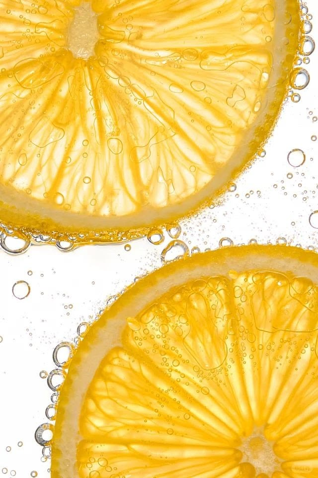
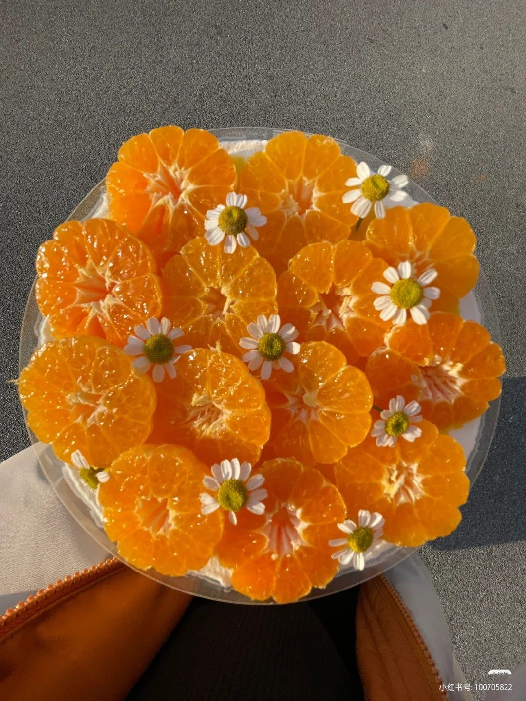

Citrus Friuts are primary source of vitamiv C,
Which stregthenes the immune system and gives us
energy.
What Does They Include?
They Include:
-
- Lemons:
-Are Yellow Citrus Fruits ,known for their sour taste and high vitamin C content.
Often used in cooking and drinks

Packed with Vitamin C and zest for life,
lemons are a natural boost for a both flavor and energy!
In this vedio, we will share with you the easiest ways
to
make Your Own Lemon Juice
They also include:
- Oranges:
- -Are deliCious citrus fruits ,known foe their bright color and sweet taste.
They are great source of Vitamin C and fiber, making them a perfect health snack.

Also, Enjoy the refreshing process of making homemade orange tea✨